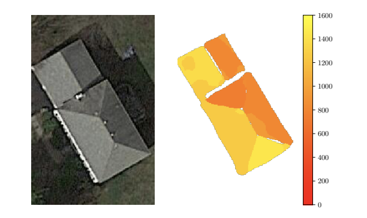

5 Week 4: Policy
5.1 Summary:
South Africa and in particular Cape Town has for several years suffered from a lack of electricity to appropriately support its population, due to the ageing infrastructure of the coal power plants which are the primary national power generators. In response to this, Cape Town has enacted regular rolling blackouts during peak power usage times to reduce pressure on the national grid. This process, called “load shedding”, has unequal effects on the population; while wealthier households can rely on private generators, others suffer from various effects of loss of power including food insecurity, employment instability, loss of internet access, and inability to travel. South Africa outlined several policies to increase grid capability in their South African Renewable Energy Masterplan, including the implementation of small-scale embedded generation (SSEG) by businesses and private citizens. These SSEGs are photovoltaic systems that primarily power the buildings that they are mounted on, but also feed excess energy back into the grid. These policies incentivise the installation of solar panels on homes and businesses by providing tax rebates, and paying households and businesses for the electricity they sell back to the grid, either in cash (for businesses only) or in electricity credit. This program has proven to be extremely popular, with a 3-6 month waiting list on applications to connect to the national grid - which must be vetted in-person to ensure the safety of the grid.
5.2 Applications
By initiating this program the government has made strong steps to relieve both inequality and discomfort caused by the rolling blackouts and reduce reliance on non-environmentally friendly power infrastructure. Through the use of remote sensing data, these initiatives can be sped up and applied more effectively throughout Cape Town. Remote sensing data can help identify and prioritise roofs best suited to produce the most power in being hooked up to the national grid, decreasing inequitable power cuts and reducing reliance on coal plants.
Several previous studies calculating potential solar resources can be used as examples of this process. Polo et al (2015) used Meteosat data to calculate Global Horizontal Irradiance (GHI), measuring both direct solar radiation and diffuse radiation scattered by the atmosphere. It also utilised sunshine duration data recorded from the ground and meteorological data. This data was used to show the comparative potential performance of solar power plants in different areas of the country. The main restrictive factor was shown to be the slope of the land, and the most effective solar locations were found to be in the south of the country closer to the equator.
Another project, Lee et al (2019)’s “DeepRoof” used deep learning techniques in combination with satellite imagery to identify roofs and calculate the potential solar output of the roofs of existing buildings, rather than potential solar plant sites. The deep learning methods were capable of accurately detecting the angle of slanted roofs from the images alone, and accounting for them within solar potential calculations as well as for shade cast by nearby objects. DeepRoof and Polo et al (2015) both accounted for the effect of slope upon potential solar panel placement, but only DeepRoof accounted for the height of the solar panels by incorporating into their study real estate data about the height of the buildings.

Bódis et al (2019) used similar solar irradiance analysis and meteorological measurement as Polo et al but different remote sensing roof detection methods from Lee et al. Instead of real estate data, which could be inaccurate or not easily available, they used satellite imagery data to measure rooftops and calculate potential power output for grid-connected solar rooftops across the EU. Financial data on the price of electricity and the local cost of funding solar panel projects was also calculated in order to identify regions that had comparatively high photovoltaic potential, high electricity cost, and low solar installation cost, and thus could benefit most from increased solar installation.
LiDAR data is expensive and can be difficult to obtain. Having access to other methods of rooftop estimation such as were used in DeepRoof can be useful, but for a project that is analysing a large area rather than an individual roof, LiDAR rooftop analysis is certainly more efficient and likely more accurate.
The methods outlined above by previous studies can be utilised in different ways to identify and prioritise roofs with high photovoltaic potential to connect to the national grid. Satellite imagery and Meteosat data can be used to find rooftops, estimate their size, and calculate the level of direct and diffused solar radiation that they receive. Methods like those used in DeepRoof can further calibrate these estimates by incorporating the altitude and angle of the roof, and identifying potential nearby obstructions to sunlight. Once the 3-6 month waiting list has been dealt with, these methods could help the city government to identify buildings that are good candidates for solar panels and provide suitable incentives for their installation and connection. Using economic data as was done in Bódis et al’s study could find relatively economically privileged homes and businesses in regions of Cape Town more capable of affording the initial cost of solar installation in exchange for long term rewards. These buildings likely use significantly more electricity than smaller ones, increasing the impetus to decrease their reliance on the national grid. By focusing on motivating wealthier areas to install panels, some of the financial costs of installation would be removed from the government, which is currently in a significant amount of debt. Providing these relative benefits to wealthier areas would also help to remove the extra burdens faced by the socioeconomically disadvantaged as the cost of electricity and the frequency of blackouts would fall in response to increased power supply and decreased demand.
5.3 Reflection
Many more factors were involved in the calculation of rooftop solar potential than I would have thought. Multiple forms of remote sensing were used in different projects, combining satellite data with LiDAR plane data, which I have not really seen used before and which I found super interesting. It reminds me of some of the 3D view options on Google Maps and Apple maps, making me wonder if those are based on LiDAR data or if they have other methods of estimating building height. The inclusion of machine vision / recognition methods also interested me as it is something I will soon be covering in other classes; I’m hoping to do a project on archaeological site recognition in drought stricken areas like this one, which would also combine meteorological data with satellite imagery and machine vision.
As for the policy issues, they are difficult to fully sort out as the real world is tricky. Given that many homes in wealthier neighbourhoods in Cape Town already have generators, I would prefer that independent solar panel power access be distributed in disadvantaged neighbourhoods; however, South African townships do not have suitable architecture for solar panels in either size or stability. There is not a perfect solution for this issue, but there are many actions that can be taken to mitigate contributions to climate change and its effects on local communities.
5.4 References
Bódis, K., Kougias, I., Jäger-Waldau, A., Taylor, N. and Szabó, S. (2019). “A high-resolution geospatial assessment of the rooftop solar photovoltaic potential in the European Union.” Renewable and Sustainable Energy Reviews, 114, p.109309.
Lee, S., Iyengar, S., Feng, M., Shenoy, P. and Maji, S., 2019, July. “Deeproof: A data-driven approach for solar potential estimation using rooftop imagery”. In Proceedings of the 25th ACM SIGKDD International Conference on Knowledge Discovery & Data Mining (pp. 2105-2113).
Middleway, L. (2012) “Load Shedding All Areas Schedule and Map”, Studocu. Available at: https://www.studocu.com/en-za/document/university-of-south-africa/business-management-ib/load-shedding-all-areas-schedule-and-map/17571011 (Accessed: 15 March 2024).
Mineral Resources & Energy Science and Innovation Trade, Industry and Competition (2023) “South African Renewable Energy Masterplan (SAREM)”. Available at https://www.dmr.gov.za/Portals/0/Resources/Renewable%20Energy%20Masterplan%20(SAREM)/South%20African%20Renewable%20Energy%20Masterplan%20(SAREM)%20Draft%20III.pdf (Accessed: 15 March 2024)
Polo, J., Bernardos, A., Navarro, A.A., Fernandez-Peruchena, C.M., Ramírez, L., Guisado, M.V. and Martínez, S. (2015). “Solar resources and power potential mapping in Vietnam using satellite-derived and GIS-based information”. Energy Conversion and Management, 98, pp.348-358.